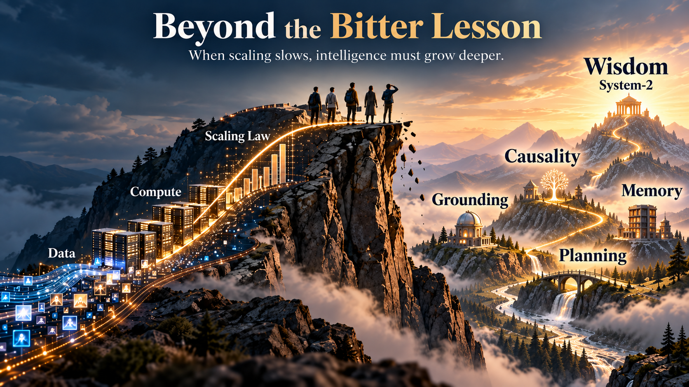

In 2019, Richard Sutton published a short essay, “The Bitter Lesson.” Its central observation was powerful: over the long run, general methods that can exploit increasing computation—especially search and learning—have repeatedly outperformed approaches that depend heavily on hand-engineered domain knowledge.
I agree with much of that lesson. My own work moved decisively toward data-centric learning more than a decade earlier for a similar empirical reason: as data volume increased, learned systems often improved in ways that made fixed comparisons among algorithms look much less permanent.
But a useful historical lesson can become misleading when extended beyond what the evidence establishes. The Bitter Lesson tells us a great deal about how representations can be learned. It does not establish that data and compute alone constitute a complete architecture for autonomous, persistent, causal, real-world intelligence.
Data and compute may be the foundation of modern AI. The open question is what additional machinery, if any, is required when learned systems must act, remember, revise, commit, and recover in the real world.

Why I Took the Data-Centric Turn
In the early 2000s at UC Santa Barbara, much of my research centered on statistical learning and perceptual modeling. Like many researchers of that period, I cared deeply about mathematical formulations, structural priors, and the relative merits of competing algorithms.
What changed my direction was empirical. In our experiments, increasing the amount of training data repeatedly improved generalization, and the ranking among methods could change as the sample size changed. A model that looked superior at one data scale did not necessarily remain superior at another.
That experience pushed me toward a simple question: should data scale itself be treated as a first-class variable in machine learning, rather than merely as a fixed resource behind the benchmark?
I joined Google Research in 2006 because it was one of the few environments where we could combine Web-scale data with large distributed CPU clusters. My group worked on scalable learning methods including Parallel SVM and parallelized topic modeling, along with large-scale multimedia analysis. In 2011, I consolidated much of this work in the Springer monograph Foundations of Large-Scale Multimedia Information Management and Retrieval.
The book's structure reflects the research position directly: one part addresses representation and perception; another addresses the scalability machinery required to make learning work on high-dimensional, Web-scale data. The point was not that models no longer matter. It was that the interaction among model, data, and compute changes as scale changes.
What the Bitter Lesson Gets Right — and Why Games Are Different
Sutton's strongest examples remain compelling. In domains such as chess and Go, systems increasingly succeeded by replacing large quantities of handcrafted domain knowledge with general search and learning procedures that could exploit more computation.
AlphaGo Zero makes the point vividly. It did not require a corpus of human expert games; it created its own training distribution through self-play. But self-play is not the absence of data. It is an automated data-generation mechanism: the system repeatedly creates states, actions, and outcomes from which it learns.
The crucial point is that board games provide an unusually clean experimental world. Their input interface is invariant: every player sees the same board, the legal actions are precisely defined, and the transition rules do not change from one episode to the next. Their output criterion is also invariant: win, loss, or draw is determined by an exact rule understood by the learner, the opponent, and the referee alike. The system can therefore run millions of trials, make catastrophic strategic mistakes, reset the board, and learn from the result without harming the world outside the simulation.
Real-world diagnosis is fundamentally different. A patient does not arrive as a complete, noiseless board state. Symptoms are partial, measurements are noisy, histories are incomplete, disease processes evolve over time, and two patients with superficially similar observations can require different interventions. Even the target is not always an invariant label: diagnosis may remain uncertain, treatment changes the state being observed, outcomes can be delayed, and the cost of a wrong action can be irreversible.
In a game, the learner can repeatedly explore a stable world with exact rules and an exact terminal signal. In medicine, robotics, finance, and other real-world domains, both the state and the consequences are uncertain, context-dependent, and often irreversible.
This is exactly where the Bitter Lesson is strongest: when a domain supplies a scalable learning loop and computation can be converted into ever more search, experience, or optimization. The lesson becomes less complete when the environment cannot be reset, the relevant state is only partially observed, and trial-and-error itself carries real cost.
AlphaFold Refines the Lesson
AlphaFold is often invoked as another triumph of scale, and correctly so. Yet it also illustrates why the story is richer than “just add data and compute.” The published AlphaFold2 system combines large biological datasets with carefully designed representations, multiple-sequence alignments, geometric reasoning, iterative refinement, and architectural structure informed by the protein problem.
That does not contradict the Bitter Lesson. It clarifies it. Human scientists did not hand-code the final protein structures. They designed a computational system in which the structures could be learned.
The lesson is not “architecture is unnecessary.” It is “do not hand-code what a scalable learning process can discover.”
For AGI, the analogous question is therefore not whether we should manually encode intelligent answers. We should not. The harder question is whether mechanisms for maintaining state, checking causal claims, controlling irreversible actions, and governing long-horizon deliberation will themselves emerge reliably from scale—or whether some of those functions require explicit system architecture.
Where Scale Alone Has Not Yet Closed the Case
Existing evidence does not show that data volume and raw compute by themselves are sufficient for every requirement of persistent real-world agency. Four gaps remain especially important in my research program.
1. Grounding and Context
Real-world meaning is often conditional on time, ownership, provenance, human preference, and local context. A sentence such as “move these papers” can be harmless in one setting and destructive in another. More training data can improve priors, but a deployed system still needs to bind those priors to the current situation.
2. Causal Identification
Standard observational pretraining objectives are primarily associational: they learn statistical regularities in what was observed. That does not, by itself, identify the effect of an intervention or establish a counterfactual. Causal reasoning can certainly use data, but it requires assumptions, interventions, or identification conditions beyond correlation alone.
3. Persistent State and Irreversible Commitment
Generating another token is reversible in a way that dispensing a drug, transferring money, or commanding a robot is not. Long-horizon agents need explicit ways to represent what has been committed, what remains tentative, what can be undone, and what requires compensation after failure.
This is why our work treats transactional state as part of intelligence rather than as a software-engineering afterthought. Intelligence can propose; an execution layer must decide what is safe to commit.
4. Meta-Cognitive Initiative: Crossing Between Paradigms
Scientific discovery is not only about reasoning correctly within an existing framework. The hardest advances often occur when the framework itself becomes the obstacle. A productive scientist must recognize that a line of attack has reached a dead end, abandon assumptions that organized the search so far, and construct a different conceptual frame.
Frontier LLMs are already remarkably capable inside a given frame. Once a promising representation, proof strategy, causal hypothesis, or decomposition is supplied, they can generate alternatives, derive consequences, check intermediate steps, and search the surrounding solution space at extraordinary speed. The harder problem is deciding, without being told, that the current representation itself should be discarded.
This matters because today's LLMs are trained primarily on existing human knowledge and optimized to produce plausible continuations under a learned distribution. They can recombine prior concepts in novel ways, but maximum-likelihood generation naturally favors continuations close to already probable associations. When a research program becomes trapped inside a locally coherent but globally unproductive framework, longer reasoning traces or repeated self-collaboration may simply explore the same dead end more thoroughly.
A paradigm shift begins when the intelligent act is no longer to answer the question, but to change the question, the representation, or the assumptions under which it is being asked.
Today, that bridge is still frequently supplied by a human expert: introducing an unexpected analogy, changing the representation of the problem, questioning an assumption everyone had treated as fixed, or importing a method from a distant field. Multi-agent collaboration can help, but only if it does more than produce several locally plausible continuations from essentially the same learned distribution.
This motivates explicit machinery for dead-path detection, assumption challenge, cross-domain search, deliberate reframing, and strategic abandonment of an exhausted line of inquiry. A concrete case is our 2026 longitudinal Collatz study, Exploring Collatz Dynamics with Human-LLM Collaboration (arXiv:2603.11066). The study records roughly 1,014 computational scripts, 630 formal results, and 29 mathematical paradigms. Section 12 explicitly separates what the LLMs did well from the role of the human moderator: choosing and reframing the research direction, deciding which routes to pursue or abandon, and supplying key conceptual redirections. The contribution tables even identify a critical dual-domain paradigm bridge as moderator-supplied evidence of this distinction.
In that study, the models were highly productive once a mathematical frame was supplied, but strategic reframing still depended heavily on human initiative. This is the distinction explored more broadly in The Path to AGI: object-level reasoning asks whether a derivation inside the current frame is correct; the governance of reasoning asks whether the frame itself should survive.
The Architectural Question
The strongest version of the Bitter Lesson does not require us to choose between learning and architecture. A modern computer is not powerful because engineers hard-code every answer; it is powerful because a general computational substrate is organized by mechanisms for memory, execution, isolation, and state transition.
I see the AGI problem similarly. Foundation models provide an extraordinary learned substrate: broad, associative, generative, and increasingly capable of reasoning. My research program asks what is required around that substrate when the system must operate for long periods, across multiple models and tools, under uncertainty, while remaining auditable and recoverable.
Across the three volumes of The Path to AGI, we explore one possible answer: semantic anchoring for context, epistemic auditing for causal reasoning, persistent transactional state for long-horizon operation, and multi-agent collaboration for exposing blind spots.
These mechanisms may eventually be learned end to end. They may instead remain partly architectural. That is an empirical question, and it should remain one.
The Lesson Beyond the Bitter Lesson
The Bitter Lesson remains one of the most useful warnings in AI research: do not spend decades hand-coding domain knowledge that general learning methods can eventually discover more effectively from scale.
My proposed extension is narrower:
Do not confuse learning the contents of intelligence with engineering the conditions under which intelligence can act safely, persistently, and causally in the world.
Data and compute are the foundation of modern AI. Nothing we have seen so far establishes that they are the complete architecture of intelligence.
The scientific question is therefore not whether scaling matters. It plainly does. The question is what remains after scale has given us extraordinarily capable learned models—and which of those remaining functions can themselves be learned.
That is the question I believe the next phase of AGI research must answer.
Selected Sources
- Richard Sutton, “The Bitter Lesson” (2019)
- Edward Y. Chang, Foundations of Large-Scale Multimedia Information Management and Retrieval (Springer, 2011)
- Silver et al., “Mastering the game of Go without human knowledge” (Nature, 2017)
- Jumper et al., “Highly accurate protein structure prediction with AlphaFold” (Nature, 2021)
- Wang et al., “A data-driven study of image feature extraction and fusion” (Information Sciences, 2014)